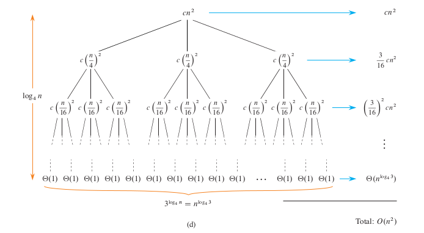

Solving Recurrence¶
The term “solving recurrence” refers to the process of finding the time function \(T(n)\) for an algorithm, when the algorithm is implemented recursively. As the time function is usually expressed as a recurrence relation, the process of solving recurrence is also known as solving recurrence relation.
Recursive relation¶
Many algorithms are either recursive in nature or can be efficiently implemented as an recursive algorithm. Among these are the divide-and-conquer algorithms, dynamic programming algorithms, the backtracking algorithms, and so on. In the analysis of these recursive implementations of algorithms, the time function \(T(n)\) can be described by a recurrence relation.
Definition¶
A recurrence relation is an equation that recursively defines a sequence, where each term is a function of one or more of the preceding terms.
E.g. The recursive relation for a merge sort is: \(T(n) = 2T(n/2) + \Theta(n)\)
General forms¶
There are many forms of recurrence relations. The following are the most common forms found in the analysis of algorithms.
Divide-and-conquer recurrence
\[T(n) = aT(n/b) + f(n)\]where \(a \geq 1\) and \(b > 1\) are constants and \(f(n)\) is a given function.
Merge sort
Binary search
Maximum subarray
Strassen’s matrix multiplication
Linear recurrence (first order)
\[T(n) = aT(n-1) + f(n)\]where \(a \geq 1\) is a constant and \(f(n)\) is a given function.
Linear search (recursive version)
Insertion sort/Selection sort (recursive version)
Euclidean’s GCD algorithm
Linear recurrence (second order)
\[T(n) = aT(n-1) + bT(n-2) + f(n)\]where \(a \geq 1\) and \(b \geq 1\) are constants and \(f(n)\) is a given function.
Fibonacci numbers (naive recursive version)
There are many other forms of recurrence relations. Some of them can be very complicated and difficult to solve. Fortunately, they are not commonly found in the analysis of algorithms.
Solution to a recurrence relation¶
A closed-form expression, also known as an explicit formula, is a mathematical expression that directly provides the value of a function or a sequence for any given input or term, without the need for further computation or recursion. In essence, it represents a formulaic solution that expresses the relationship between the input or term and the output in a straightforward, algebraic manner.
E.g. \(n^2 + 2n + 1\)
The solution of a recurrence relation is a closed-form expression for the function \(T(n)\) in terms of \(n\).
E.g. The close form solution of \(T(n) = 2T(n/2) + n\) is \(O(n\log n)\)
Common Approaches¶
Substitution method
Recursion-tree method
Master method
Substitution method¶
The key idea behind the substitution method is to guess a solution for the recurrence relation and then use mathematical induction to prove that the guessed solution is correct.
Guess the form of the solution.
Use mathematical induction to find the constants and show that the solution works.
Substitution method examples¶
Assume that we have the recurrence relation:
We guess the solution is \(f(n) = An^2 + Bn + C\) where :math`A`, :math`B`, :math`C` are constants.
Use substitution to find :math`A`, :math`B`, :math`C`.
\[\begin{split}\begin{align*} f(n) &= f(n-1) + 3n \\ An^2 + Bn + C &= A(n-1)^2 + B(n-1) + C + 3n \\ An^2 + Bn + C &= An^2 - 2An + A + Bn - B + C + 3n \\ \end{align*}\end{split}\]So, we have
\[\begin{split}\begin{align*} A &= A \\ B &= -2A + B + 3 \\ C &= A - B + C \\ f(1) &= A + B + C = 1 \\ \end{align*}\end{split}\]Solve them to get
\[\begin{split}\begin{align*} A = 1.5 \\ B = 1.5 \\ C = -2 \\ \end{align*}\end{split}\]The final formula is :math`f(n) = 1.5n^2 + 1.5n - 2`.
Mathematical induction to prove the formula is correct.
To prove the formula \(f(n) = 1.5n^2 + 1.5n - 2\) is correct for all $n$.
Base case: \(f(1) = 1.5 + 1.5 - 2 = 1\). Correct!
If the formula is correct for \(n-1\), which means \(f(n-1) = 1.5(n-1)^2 + 1.5n - 2\) then
\[\begin{split}\begin{align*} f(n) &= f(n-1) + 3n \\ &= (1.5(n-1)^2 + 1.5(n-1) - 2) + 3n \\ &= 1.5n^2 - 3n + 1.5 + 1.5n - 1.5 - 2 + 3n \\ &= 1.5n^2 + 1.5n - 2 \\ \end{align*}\end{split}\]So, the formula is correct for :math`n`.
Done!
Recurrence tree method¶
The recursive tree method is a graphical approach used to solve recurrence relations, especially in the context of analyzing the time complexity of recursive algorithms in computer science. It can also be used to generate an educated guess as to the closed-form solution of a recurrence relation, which can then be verified by the substitution method.
Draw a recursion tree.
Start by representing the initial recurrence as the root of the tree.
For each recursive call made by the algorithm, draw a child node. The number of child nodes corresponds to the number of recursive calls.
Label each node with the cost of the non-recursive work done at that level.
Continue this process until you reach the base case of the recurrence.
Compute the cost of each level
For each level of the tree, sum up the costs of all the nodes at that level.
Compute the total cost
Recursion Tree Examples¶
For the \(T(n) = 3T(n/4) + \Theta(n^2)\) recurrence relation. Step 1 - 3:
Draw the root node.
Draw the level 1 nodes.
Draw the level 2 nodes.
{kind=link}
Draw all levels
Step 4:
{kind=link}
Credit: Introduction to Algorithms, 4th Ed., T. Cormen et al.
Master method¶
The Master Method is a popular technique in computer science to determine the time complexity of divide-and-conquer algorithms. It provides a simple and general way to analyze the time complexity of recursive algorithms without having to solve the recurrence relation explicitly.
The Master Method deals with recurrences of the following form:
where:
\(n\): the size of the problem
\(a\): the number of subproblems in the recursion
\(b\): The factor by which the problem size is divided in each recursive call.
\(f(n)\): The cost of the work done outside the recursive calls, which typically includes the cost of dividing the problem and cost of merging the solutions.
Three cases¶
The Master Method provides three cases to determine the time complexity:
Case 1:
If \(f(n) = O(n^c)\) where \(c < \log_b a\), then: \(T(n) = \Theta(n^{\log_b a})\)
Case 2:
If \(f(n) = \Theta(n^{\log_b a} \cdot \log^k n)\) for a \(k \geq 0\), then: \(T(n) = \Theta(n^{\log_b a} \cdot \log^{k+1} n)\)
Case 3:
If \(f(n) = \Omega(n^c)\) where \(c > \log_b a\), and if \(a f\left(\frac{n}{b}\right) \leq k f(n)\) for some \(k < 1\) and sufficiently large \(n\), then: \(T(n) = \Theta(f(n))\)
Intuitions for the three cases¶
Case 1:
If the cost of the work done outside the recursive calls is small enough, then the overall running time is still dominated by the cost of the recursive calls.
Case 2:
If the cost of the work done outside the recursive calls is nearly the same across all levels of the recursion.
Case 3:
If the cost of the work done outside the recursive calls is large enough, then the overall running time is dominated by the cost of the work done outside the recursive calls.
Master method examples¶
For the recurrence relation of the Merge Sort algorithm:
\(T(n) = 2T\left(\frac{n}{2}\right) + n\)
We have:
\(a = 2\)
\(b = 2\)
\(f(n) = n\)
Using the Master Method:
\(\log_b a = \log_2 2 = 1\)
\(f(n) = n = \Theta(n^1)\)
This falls under Case 2 with \(k = 0\). Thus, the solution is: \(T(n) = \Theta(n \log n)\)